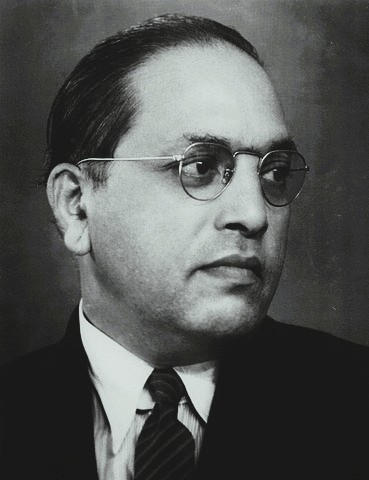

Who Was B.R. Ambedkar?
B.R. Ambedkar, born Bhimrao Ramji Ambedkar, was an Indian jurist, economist, and social philosopher who lived from 1891 to 1956. He is remembered as one of the most rigorous and uncompromising critics of the Hindu caste system in modern history, as the principal architect of the Constitution of India, and, in the final months of his life, as the founder of a reformed and socially engaged form of Buddhism known as Navayana Buddhism.
Ambedkar is especially associated with the argument that caste cannot be gradually reformed away but must instead be annihilated outright, since it rests not on a simple, correctable division of labor but on what he called a graded system of inequality, actively upheld by the religious authority of core Hindu scriptural texts. Rather than treating untouchability as an unfortunate social custom that enlightened individuals might voluntarily abandon, his philosophy insists that caste is a deeply structural form of oppression requiring equally structural transformation.
Born into a family belonging to the Mahar community, then classified among India's so-called untouchable castes, Ambedkar overcame severe social discrimination to become one of the most highly educated Indians of his generation, earning doctorates from Columbia University and the London School of Economics before qualifying as a barrister in London, an academic and legal formation that directly shaped his later constitutional and philosophical work.
Because Ambedkar's career spanned legal scholarship, economics, constitutional drafting, and religious reform, historians and philosophers continue to debate how best to integrate these different dimensions of his thought into a single coherent philosophical portrait. His importance nonetheless remains foundational, since his critique of caste, his vision of social democracy, and his reinterpretation of Buddhism continue to shape debates about justice, equality, and religious transformation in India and beyond.
B.R. Ambedkar: Quick Facts
- Name — Bhimrao Ramji Ambedkar (Babasaheb Ambedkar)
- Period — 1891–1956
- Born in — Mhow, Central Provinces, India
- Philosophical period — Modern Indian philosophy
- Associated with — The annihilation of caste and social democracy
- Known for — Drafting the Constitution of India and founding Navayana Buddhism
- Major works — Annihilation of Caste, The Buddha and His Dhamma, The Problem of the Rupee
- Education — Columbia University, the London School of Economics, and Gray's Inn
- Political role — First Law Minister of independent India
- Major event — Led a mass conversion to Buddhism at Nagpur in 1956
Ambedkar and the Struggle Against Caste in Colonial India

Ambedkar's philosophy took shape within a colonial Indian society structured by a rigid caste hierarchy, in which communities classified as "untouchable," including Ambedkar's own Mahar community, faced severe and systematic exclusion from temples, schools, water sources, and countless other aspects of ordinary social life, sanctioned by long-standing religious and customary authority.
By the early twentieth century, a range of reform movements had already begun challenging aspects of this system, including efforts within the Brahmo Samaj and Arya Samaj traditions and Gandhi's own campaigns against untouchability, though these movements generally sought to reform caste practice from within the existing framework of Hindu religious and social life rather than dismantling the underlying structure itself.
Ambedkar's own direct experience of caste discrimination, including exclusion from basic civic amenities despite his exceptional educational achievements, convinced him that such reformist approaches were fundamentally inadequate, shaping his conviction that meaningful change required confronting caste as a structural and religiously sanctioned system rather than a set of individually correctable prejudices.
In the intellectual environment associated with Ambedkar, philosophical reflection therefore combined closely with sustained legal, political, and religious activism, treating rigorous argument against caste not as an abstract academic exercise but as part of a comprehensive practical program for securing genuine social, economic, and political equality for India's most marginalized communities.
What Did B.R. Ambedkar Mean by Constitutional Morality?
Constitutional morality was one of the most important principles in Ambedkar's understanding of democratic government. For him, a constitution could not succeed merely because its text established institutions and legal procedures; citizens and political leaders also needed to develop habits of respect for constitutional principles, lawful methods, and the limits placed upon political power.
Ambedkar drew the expression from the historian George Grote, who used it in discussing the conditions necessary for democratic government. Ambedkar argued during the framing of the Indian Constitution that constitutional morality was not a natural sentiment that could simply be assumed to exist in society. It had to be deliberately cultivated and strengthened through democratic practice and public education.
This idea was particularly important because Ambedkar believed that India was attempting to establish political democracy within a society still marked by deep inequalities of caste, class, and social status. Democratic institutions could therefore be undermined if older habits of hierarchy and unquestioning obedience were allowed to dominate political life despite the formal existence of constitutional government.
Constitutional morality also implied respect for the rule of law, institutional procedures, individual rights, and democratic criticism. Ambedkar was deeply concerned about the possibility that political democracy could be weakened by excessive devotion to powerful individuals or by attempts to achieve political goals through unconstitutional methods. Institutions, rather than the personal authority of leaders, were meant to provide the stable framework of democratic government.
Ambedkar's concept therefore extended beyond obedience to the literal words of the Constitution. It concerned the development of a democratic political culture capable of sustaining justice, liberty, equality, and fraternity. For this reason, constitutional morality remains central to understanding Ambedkar's political philosophy and his belief that democracy required continuous social and ethical commitment rather than merely periodic elections.
B.R. Ambedkar's Views on Education and Social Empowerment
Education occupied a central place in Ambedkar's philosophy of social liberation. His own life demonstrated the extraordinary importance of access to knowledge, since education enabled him to acquire the intellectual and professional resources through which he challenged systems of caste discrimination that had attempted to restrict the opportunities available to communities such as his own.
Ambedkar did not regard education simply as a means of obtaining employment or personal advancement. He understood it as a source of intellectual independence and collective empowerment. Communities subjected to systematic exclusion needed access to knowledge in order to understand the structures that oppressed them, challenge inherited beliefs, and participate effectively in political and social life.
This conviction is closely associated with the famous call to "educate, agitate, and organize." Education represented the development of intellectual awareness; agitation meant the active challenge to injustice; and organization provided the collective strength necessary to transform individual awareness into lasting political and social change. None of these elements, in Ambedkar's broader approach, was sufficient entirely on its own.
Ambedkar also worked to expand educational opportunities institutionally. In 1945, he founded the People's Education Society, which sought to advance education, particularly among communities that had long faced restricted access to educational and social opportunities. This practical work reflected his belief that social equality required more than constitutional declarations of equal status.
His philosophy of education therefore forms part of his larger theory of democracy. A society in which large sections of the population remain excluded from knowledge cannot easily achieve genuine political equality. Education, for Ambedkar, was consequently connected to dignity, critical thought, self-respect, and the capacity of marginalized people to become active participants in shaping their own social and political future.
B.R. Ambedkar and Women's Rights
Ambedkar's commitment to social equality extended beyond caste and included a sustained concern with the legal and social position of women. He regarded the unequal treatment of women as a serious obstacle to the creation of a genuinely democratic society and argued that political freedom could not be separated from equality in family life, property, education, and economic opportunity.
His most significant intervention in this area was his support for the proposed Hindu Code Bill, which sought to reform important aspects of Hindu personal law. The proposed reforms addressed questions relating to marriage, divorce, inheritance, adoption, and women's property rights, challenging legal inequalities that had historically restricted women's independence within the family.
Ambedkar regarded such reform as part of a wider transformation of Indian society rather than as a narrow legal adjustment. In his view, democracy could not consist simply of granting citizens the right to vote while leaving major inequalities untouched in their everyday social and family relationships. Legal equality had to influence the concrete conditions under which people lived.
The Hindu Code Bill encountered substantial political opposition and was not enacted in the comprehensive form Ambedkar had originally supported. Frustrated by the government's failure to move the legislation forward, Ambedkar resigned from the Cabinet in 1951. The episode revealed the extent to which his program of social reform went beyond the constitutional changes that had already been achieved after independence.
Ambedkar's engagement with women's rights is therefore essential to a full understanding of his philosophy. His conception of equality was not limited to opposition against caste hierarchy but concerned the transformation of social institutions that denied individuals equal dignity and independence. His advocacy of legal reform for women remains an important dimension of his broader philosophy of justice and social democracy.
B.R. Ambedkar's Critique of Hinduism and Religion
Ambedkar's criticism of Hinduism was inseparable from his analysis of caste. He argued that caste could not be understood merely as a collection of harmful social customs because it had historically been supported and justified through religious authority. For this reason, he increasingly questioned whether a complete destruction of caste could occur without confronting the religious ideas and texts used to legitimize it.
This position distinguished Ambedkar from reformers who attempted to remove untouchability while preserving the broader religious framework of caste. In works such as Annihilation of Caste, he argued that social reform required a willingness to question inherited authority rather than treating religious tradition as permanently beyond rational and ethical criticism.
Ambedkar was not, however, simply hostile to religion as such. His deeper concern was the relationship between religion and human welfare. He believed that religious ideas should be judged according to their ethical and social consequences rather than accepted solely because they were ancient or traditionally authoritative. A religion that sanctioned inequality, in his view, could not provide an adequate foundation for a democratic society.
His intellectual journey therefore involved a prolonged search for a religious and ethical framework compatible with liberty, equality, and human dignity. This search eventually led him toward Buddhism, which he interpreted as offering a moral and social philosophy capable of rejecting hereditary hierarchy without abandoning the importance of ethical and collective life.
Ambedkar's critique of Hinduism should consequently be understood as part of his broader philosophy of social transformation. He challenged the idea that religious identity should be protected from moral criticism when it contributed to human suffering and exclusion. His eventual conversion to Buddhism represented the culmination of this philosophical search for a social order grounded, as he understood it, in equality, rational inquiry, and human dignity.
B.R. Ambedkar and Labour Rights in India
Ambedkar's concern with economic justice extended beyond his theoretical writings on currency, land, and state policy to the concrete conditions of workers and labour. He understood political democracy as incomplete when large sections of society lacked economic security and remained vulnerable to exploitation, making labour rights an important part of his broader vision of social democracy.
During his service on the Viceroy's Executive Council as Labour Member, Ambedkar was involved in major questions concerning working conditions and labour administration. His period in office is associated with the reduction of the working day from twelve hours to eight hours in 1942, an important development in the history of labour policy in colonial India.
Ambedkar also supported the development of institutions and policies intended to address employment and industrial development. His broader approach reflected the belief that the state could not remain entirely passive in the face of severe economic inequality. Public institutions and deliberate policy, he argued, were necessary when existing social and economic arrangements failed to provide meaningful equality of opportunity.
The importance Ambedkar gave to labour also reveals the limits of reducing his thought exclusively to caste. He certainly regarded caste as a distinct and deeply entrenched system of oppression, but he also recognized that social justice required attention to working conditions, economic opportunity, industrial policy, and the material security necessary for individuals to exercise their formal political rights.
Ambedkar's philosophy of labour rights therefore belongs within his larger conception of economic democracy. Political equality achieved through constitutional rights could remain largely formal if citizens lacked the material conditions needed for a dignified life. His engagement with labour policy consequently formed part of his wider attempt to connect democracy with substantive social and economic justice.
What Did B.R. Ambedkar Mean by Fraternity?
Alongside liberty and equality, Ambedkar regarded fraternity as an essential foundation of democratic life. He believed that liberty and equality could not remain stable principles if society lacked a deeper sense of human association and mutual recognition. Democracy required more than laws and institutions; it also required people to recognize one another as possessing equal dignity.
This idea was especially significant in Ambedkar's critique of caste. Caste divided society into inherited and hierarchical groups, restricting social interaction and discouraging the development of a common sense of belonging. In such a society, formal declarations that all citizens were equal could remain ineffective because the everyday habits of social life continued to reproduce separation and inequality.
Ambedkar therefore treated fraternity as a social and moral condition necessary for democracy. Equality could be established through legal rights, and liberty could protect individual freedom, but fraternity concerned the relationships that allowed people to live together as members of a shared political and social community rather than as permanently separated groups.
His understanding of fraternity was also increasingly connected with his interpretation of Buddhism. Ambedkar saw the Buddhist tradition as providing an ethical basis for compassion and human association that could support the ideals of a democratic society. This connection helped him reinterpret liberty, equality, and fraternity not simply as political slogans but as principles requiring a deeper transformation of social attitudes.
For Ambedkar, the three ideals ultimately formed an interconnected whole. Liberty without equality could preserve privilege, while equality without liberty could suppress individual freedom. Fraternity supplied the moral and social force capable of sustaining both by encouraging recognition of the common dignity of others. His emphasis on fraternity therefore reveals that his philosophy of democracy was concerned not only with political institutions but with the transformation of society itself.
Who Was B.R. Ambedkar and What Did He Do?
Ambedkar was born in Mhow, in the Central Provinces of colonial India, into a Mahar family, a community then classified among the so-called untouchable castes. Despite facing significant discrimination throughout his early education, including being made to sit separately from other students, Ambedkar demonstrated exceptional academic ability and secured scholarships that allowed him to pursue higher education well beyond what was typically available to members of his community.
With the support of a scholarship from the progressive ruler of Baroda, Ambedkar traveled to the United States to study at Columbia University, earning a doctorate in economics, before continuing his studies at the London School of Economics and qualifying as a barrister at Gray's Inn in London, becoming one of the most extensively credentialed Indian intellectuals of his generation.
Returning to India, Ambedkar became increasingly active in public life as a lawyer, journalist, and political organizer, leading landmark campaigns including the 1927 Mahad Satyagraha, asserting the right of untouchable communities to draw water from a public tank, during which he publicly burned a copy of the Manusmriti, a classical Hindu legal text he regarded as codifying caste oppression.
Following India's independence, Ambedkar was appointed Chairman of the Drafting Committee of the Constitution of India and served as the country's first Law Minister, playing the central role in shaping the constitutional framework of fundamental rights, affirmative action provisions, and democratic institutions that continue to structure Indian governance today.
In the final year of his life, Ambedkar led a mass conversion to Buddhism at Nagpur in 1956, embracing the faith along with hundreds of thousands of his followers as a decisive rejection of the caste-bound Hindu religious order, and he died only weeks after completing his final major work, The Buddha and His Dhamma.
What Did B.R. Ambedkar Believe?
Ambedkar's philosophy centers on a rigorous and sustained critique of the caste system, which he analyzed not merely as a set of discriminatory customs but as a coherent and deeply entrenched social structure, actively sustained by the religious authority of foundational Hindu texts and by the practical cooperation of the wider caste hierarchy in enforcing exclusion.
At the center of this philosophy lies the conviction that genuine social transformation requires more than piecemeal reform or individual moral persuasion; Ambedkar argued that caste could only be effectively challenged through structural means, including legal reform, political organization, economic empowerment, and, ultimately, religious transformation, since he concluded that the caste hierarchy could not be fully separated from the religious framework that had historically legitimized it.
Ambedkar's political philosophy centers on the concept of social democracy, which he distinguished sharply from mere political democracy, arguing that formal equality before the law meant little without corresponding social and economic equality, and famously warning that a political democracy built upon an unequal social order rested on a fundamental and unsustainable contradiction.
His philosophy also placed considerable emphasis on the value of organized collective action, most memorably summarized in his call to "educate, agitate, and organize," a formula reflecting his conviction that lasting social change required combining rigorous intellectual preparation with sustained political mobilization rather than relying on either alone.
Scholars of Indian philosophy continue to debate how to situate Ambedkar's thought in relation to Western political philosophy, Marxism, and traditional Indian religious thought, given his own selective and critical engagement with all three, but his work is consistently recognized as one of the most rigorous and consequential bodies of modern Indian social and political philosophy.
Annihilation of Caste: Ambedkar's Central Argument
Annihilation of Caste, originally prepared as a speech for a 1936 reformist gathering that ultimately withdrew its invitation over the address's uncompromising content and later published by Ambedkar as a book, remains his single most influential and widely studied philosophical work.
In this text, Ambedkar argues forcefully against the common claim that caste represents merely a division of labor comparable to occupational specialization found in other societies, insisting instead that the caste system constitutes a division of laborers themselves into a fixed, hereditary hierarchy, ranking human beings against one another in a manner incompatible with basic human dignity and social efficiency alike.
Ambedkar further argues that caste cannot be reformed gradually from within, since its authority rests directly on the sanction of Hindu religious scripture; attempting to remove specific discriminatory practices while leaving this underlying scriptural authority intact, in his analysis, would inevitably allow the broader system to regenerate itself in new forms.
This diagnosis led Ambedkar to his most provocative and historically significant conclusion: that genuine liberation from caste might ultimately require abandoning Hinduism itself as a religious framework, a position that anticipated his own eventual conversion to Buddhism two decades later and that distinguished his approach sharply from contemporaries who sought to reform caste practice while remaining within the Hindu fold.
Because the speech was never actually delivered to its intended audience, its subsequent publication and wide circulation as a book allowed Ambedkar's argument to reach an audience far beyond the original reformist gathering, cementing its status as one of the most important texts in the modern history of Indian social philosophy.
Ambedkar and Gandhi: A Fundamental Disagreement
The relationship between Ambedkar and Mahatma Gandhi represents one of the most significant and philosophically consequential disagreements in modern Indian intellectual history, centering on fundamentally different diagnoses of, and proposed solutions to, the problem of caste.
Gandhi approached untouchability primarily as a distortion of authentic Hindu religious practice, referring to untouchable communities as Harijans, meaning "children of God," and advocating reform from within Hinduism through changed hearts, temple entry movements, and voluntary upliftment rather than through the wholesale rejection of Hindu religious authority.
Ambedkar rejected this approach as fundamentally insufficient, arguing that Gandhi's framework left the underlying religious and social structure of caste intact and continued to position untouchable communities as objects of upper-caste charity rather than as agents entitled to independent political power and self-determination.
This disagreement became sharply political during negotiations over the 1932 Poona Pact, when Ambedkar's proposal for separate electorates allowing untouchable communities to elect their own representatives independently was ultimately abandoned after Gandhi undertook a fast in opposition, resulting in a compromise arrangement of reserved seats within the general electorate rather than the fully independent political representation Ambedkar had originally sought.
This episode illustrates the deeper philosophical divide between the two thinkers: where Gandhi sought unity and reconciliation within a reformed Hindu social order, Ambedkar increasingly concluded that genuine liberation for his community required independent political power and, eventually, a decisive departure from the Hindu religious framework altogether.
Ambedkar's Economic Philosophy
Before his emergence as a political and constitutional figure, Ambedkar had already established himself as a serious academic economist, producing a doctoral dissertation at Columbia University and a later doctoral thesis at the London School of Economics titled The Problem of the Rupee, examining Indian currency and monetary policy under colonial administration.
Ambedkar's economic thought consistently emphasized the necessity of active state intervention to address structural inequality, arguing that market mechanisms alone could not be trusted to dismantle deeply entrenched patterns of caste-based economic exclusion without deliberate public policy directed toward that end.
His broader economic vision included proposals for land reform, state ownership of key industries, and labor rights protections, reflecting his conviction that economic democracy needed to accompany political democracy if constitutional guarantees of equality were to have any genuine practical effect on the lives of India's most disadvantaged communities.
This economic dimension of Ambedkar's philosophy remains somewhat less widely discussed than his constitutional and religious contributions, but it forms an essential part of his integrated vision of social transformation, treating economic justice as inseparable from legal and religious reform rather than as a separate or secondary concern.
Ambedkar's Engagement with Marxism: The Buddha or Karl Marx
Ambedkar engaged seriously and critically with Marxist philosophy, most directly in his essay Buddha or Karl Marx, in which he compared the Buddhist and Marxist paths to social transformation, acknowledging shared concerns about exploitation and human suffering while ultimately favoring the Buddhist approach.
Ambedkar argued that Marxism's exclusive focus on economic class failed to adequately account for the distinct and often more deeply entrenched structure of caste-based oppression, which he maintained could not be reduced simply to a symptom of economic class relations, since caste hierarchy operated through religious sanction and social exclusion in ways that class analysis alone could not fully capture.
He also expressed serious reservations about Marxism's embrace of violent revolutionary means and its rejection of religious and ethical frameworks, arguing that Buddhism offered a comparably radical critique of suffering and inequality while remaining committed to nonviolent and ethically grounded methods of social change.
This engagement illustrates Ambedkar's broader intellectual method, drawing selectively and critically on multiple philosophical traditions, including Western political philosophy, Marxism, and Buddhism, to construct a distinctive synthesis addressing the specific realities of caste oppression that none of these traditions, taken alone, fully addressed.
Ambedkar Compared with Other Modern Indian Philosophers
Ambedkar's philosophy stands in significant contrast to that of Sarvepalli Radhakrishnan, who sought to present classical Hindu Vedanta as a rationally defensible and ethically serious philosophical system for a global audience, since Ambedkar's own engagement with Hindu philosophy centered instead on exposing what he regarded as its central role in sustaining caste oppression.
Where Rabindranath Tagore's humanism emphasized universal human connection achieved through art, education, and creative expression, Ambedkar's philosophy remained more directly focused on the specific legal, political, and religious mechanisms required to dismantle a concrete and deeply entrenched system of social oppression.
Ambedkar's relationship to Gandhi's philosophy, as discussed above, involved the most direct and sustained disagreement among these modern Indian thinkers, reflecting fundamentally different assessments of whether Hindu religious and social structures could be adequately reformed from within or required more radical structural transformation.
Taken together, these comparisons illustrate the significant diversity of modern Indian philosophical response to questions of religion, social justice, and national identity, with Ambedkar's own distinctive contribution lying in his insistence that philosophical and religious questions could never be fully separated from the concrete political and legal structures needed to secure genuine human equality.
B.R. Ambedkar: Main Philosophical Ideas
Because Ambedkar's philosophical output spans legal scholarship, political theory, economics, and religious reform, his central ideas are often summarized under a small number of key doctrines drawn from across his career.
Annihilation, Not Reform, of Caste
Ambedkar argued that caste could not be gradually reformed since it rested on scriptural religious authority, requiring instead its complete structural annihilation.
Social Democracy
Genuine democracy, in Ambedkar's philosophy, requires liberty, equality, and fraternity together, since political equality without social and economic equality remains fundamentally unstable.
Constitutional Guarantee of Rights
As chief architect of India's Constitution, Ambedkar worked to secure fundamental rights and affirmative action provisions addressing historical caste-based disadvantage.
Navayana Buddhism
Ambedkar's reinterpreted Buddhism emphasized ethical and social teaching over metaphysical doctrine, presenting the rejection of caste as central to the Buddha's original message.
Educate, Agitate, Organize
Ambedkar's famous call to action reflects his conviction that lasting social change requires combining intellectual preparation with sustained collective political mobilization.
What Do We Actually Know About Ambedkar's Philosophy?
Because Ambedkar lived within well-documented modern history and left an extensive body of published writing, legal drafts, and public speeches, his biography is unusually well established compared with many earlier philosophers; the more significant debates concern the interpretation and legacy of his ideas rather than uncertainty about the events of his life.
Relatively Well-Attested
- Ambedkar was born in Mhow in 1891 and died in 1956.
- He earned doctorates from Columbia University and the London School of Economics.
- He chaired the Drafting Committee of the Constitution of India.
- He authored Annihilation of Caste and The Buddha and His Dhamma, among other major works.
- He led a mass conversion to Buddhism at Nagpur in 1956.
Widely Discussed Interpretive Themes
- His argument that caste rests on scriptural religious authority rather than mere custom.
- His disagreement with Gandhi over separate electorates and the Poona Pact.
- His reinterpretation of Buddhism through Navayana as an ethical and social philosophy.
Areas of Ongoing Scholarly Debate
- How Navayana Buddhism should be assessed in relation to more traditional Buddhist doctrine and metaphysics.
- How Ambedkar's economic proposals for state intervention should be situated in relation to socialist and Marxist economic theory.
- The continuing debate over the legacy and adequacy of constitutional affirmative action measures he helped establish.
- How to weigh Ambedkar's disagreements with Gandhi against their shared commitment to India's broader social and political transformation.
Why Is B.R. Ambedkar Important in Philosophy?
Ambedkar is important because he developed one of the most rigorous and consequential critiques of structural social inequality produced anywhere in modern philosophy, combining sustained legal, political, and religious argument in service of a coherent vision of human dignity and equality.
His philosophical legacy raises a fundamental question that remains central to social and political philosophy: Can deeply entrenched systems of social hierarchy be reformed gradually from within, or do they require complete structural transformation, including the transformation of the religious and cultural frameworks that sustain them?
This question has continued to shape debates in social and political philosophy well beyond India, as later thinkers examined how Ambedkar's analysis of caste as a distinct and irreducible form of oppression relates to broader theories of social justice, religious authority, and structural inequality.
Ambedkar's importance therefore does not depend on resolving every scholarly debate about the reception of his ideas. His significance comes from his role in demonstrating that philosophical argument, legal reform, and religious transformation could be combined into a single sustained project of social liberation, a legacy that continues to shape Indian constitutional democracy and social movements today.
B.R. Ambedkar Explained Simply
B.R. Ambedkar was an Indian jurist and social philosopher who argued that the caste system could not be reformed but had to be annihilated, and who went on to draft the Constitution of India and found a reinterpreted form of Buddhism.
Instead of treating caste as a set of correctable customs, Ambedkar's philosophy insists that caste is a structural system of graded inequality sustained by religious authority, requiring legal, political, economic, and, ultimately, religious transformation to overcome.
His doctrines of social democracy and Navayana Buddhism remain among the most influential contributions of modern Indian philosophy to the wider history of social and political thought.
- Philosopher/Jurist: B.R. Ambedkar
- Period: 1891–1956
- Tradition: Modern Indian social and political philosophy
- Major doctrine: Annihilation of caste
- Central concern: Structural equality and social democracy
- Associated movement: Navayana Buddhism
- Major work: Annihilation of Caste
- Political role: Chief architect of the Constitution of India
A Principle Central to Ambedkar's Philosophy
“Political democracy cannot last unless there lies at the base of it social democracy.”
Frequently Asked Questions About B.R. Ambedkar
Who was B.R. Ambedkar?
B.R. Ambedkar was an Indian jurist, economist, and social philosopher who fought for the annihilation of the caste system, chaired the drafting committee of the Constitution of India, and later founded Navayana Buddhism.
What is Ambedkar famous for?
Ambedkar is famous for his book Annihilation of Caste, his role as chief architect of the Constitution of India, and his mass conversion to Buddhism along with hundreds of thousands of followers in 1956.
What did Ambedkar believe?
Ambedkar believed that caste was a structural system of graded inequality sustained by religious authority, that genuine democracy required social and economic equality alongside political equality, and that lasting social change required education, agitation, and organized political action.
What does Ambedkar mean by the annihilation of caste?
Ambedkar argued that caste could not be reformed piecemeal because it rests on the religious authority of Hindu scriptures; genuine social justice required abolishing the caste system entirely rather than merely softening its practices.
Why did Ambedkar convert to Buddhism?
Ambedkar converted to Buddhism in 1956 along with hundreds of thousands of followers because he concluded that liberation from caste required leaving the religious framework that sustained it, and he found in Buddhism a rational, ethical path emphasizing equality and social justice.
What is Navayana Buddhism?
Navayana Buddhism is Ambedkar's reinterpretation of Buddhist teaching, downplaying traditional metaphysical elements such as rebirth in favor of emphasizing ethical and social teachings on equality and the rejection of caste hierarchy.
What is social democracy in Ambedkar's philosophy?
Social democracy, for Ambedkar, requires liberty, equality, and fraternity together, holding that political democracy cannot be sustained without corresponding social and economic equality.
How did Ambedkar and Gandhi disagree?
Gandhi sought to reform untouchability from within Hinduism through changed hearts and voluntary upliftment, while Ambedkar argued this left caste's underlying structure intact and instead sought independent political power for untouchable communities, a disagreement that came to a head over the 1932 Poona Pact.
What is Ambedkar's economic philosophy?
Ambedkar's economic philosophy emphasized active state intervention, including land reform, state ownership of key industries, and labor rights, arguing that market mechanisms alone could not dismantle caste-based economic exclusion.
Why is Ambedkar important today?
Ambedkar remains important because his critique of caste, his constitutional vision of social democracy, and his reinterpretation of Buddhism continue to shape debates about justice, equality, and religious transformation in India and beyond.
Related Indian Philosophers
B.R. Ambedkar belongs to the wider tradition of modern Indian philosophy. Explore philosophers who shaped and responded to many of the same questions of justice, religion, and social transformation.
Philosophy Branches Connected to Ambedkar
Ambedkar's philosophical legacy is particularly important for ethics, where philosophers investigate justice and equality, and for political philosophy, which examines the structure of democracy, rights, and social organization.
Why B.R. Ambedkar Still Matters
Ambedkar did not confine his philosophy to abstract theoretical argument, translating his analysis of caste and inequality directly into constitutional law, political organization, and, ultimately, a reinterpreted religious tradition intended to offer his community a genuine path beyond caste oppression.
Yet the questions associated with Ambedkar remain fundamental to philosophy: Can deeply entrenched social hierarchies be reformed from within, or do they require complete structural transformation? What does genuine democracy require beyond formal political rights? Can religious tradition itself be remade in the service of human equality?
The philosophy of annihilation, social democracy, and Navayana Buddhism he developed across decades of legal, political, and religious work transformed these questions into one of the most consequential bodies of modern Indian philosophical and constitutional thought. His emphasis on structural equality, social democracy, and human dignity made B.R. Ambedkar one of the most significant philosophical figures of the modern era.
Explore Great Philosophers
Social Democracy and Ambedkar's Constitutional Philosophy
Ambedkar's concept of social democracy holds that genuine democratic society requires the combined presence of liberty, equality, and fraternity, principles he traced partly to the French Revolution but also, significantly, to the ethical teaching of Buddhism, which he increasingly came to regard as offering a more thoroughgoing account of human equality than Hindu religious tradition provided.
As Chairman of the Drafting Committee of the Indian Constitution, Ambedkar worked to translate this philosophy into concrete legal and institutional form, helping to secure constitutional provisions guaranteeing fundamental rights, prohibiting untouchability, and establishing affirmative action measures intended to address the accumulated disadvantage faced by historically oppressed communities.
In his closing address to the Constituent Assembly, Ambedkar famously warned that India was entering a "life of contradictions," achieving political equality through universal suffrage while continuing to tolerate deep social and economic inequality, and he argued that this contradiction could not be sustained indefinitely without risking the stability of the entire democratic project.
This constitutional philosophy reflects Ambedkar's broader conviction that formal legal rights, while necessary, remain insufficient on their own to secure genuine justice, requiring continued vigilance, active state intervention, and sustained social transformation to ensure that constitutional guarantees translate into lived social equality.